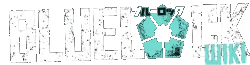

This website is for the blue lock anime
This website has some simple info about the anime and manga Blue Lock. Blue lock is about football. Sign up if you wanna be a part of the blue lock community.

This website has some simple info about the anime and manga Blue Lock. Blue lock is about football. Sign up if you wanna be a part of the blue lock community.